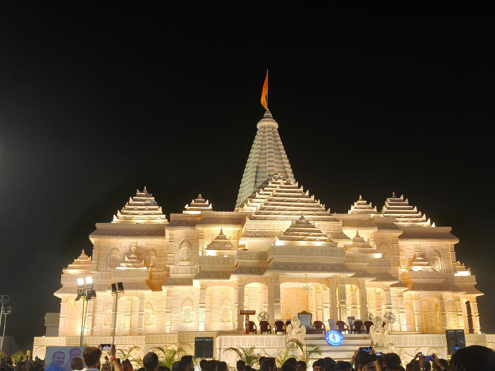
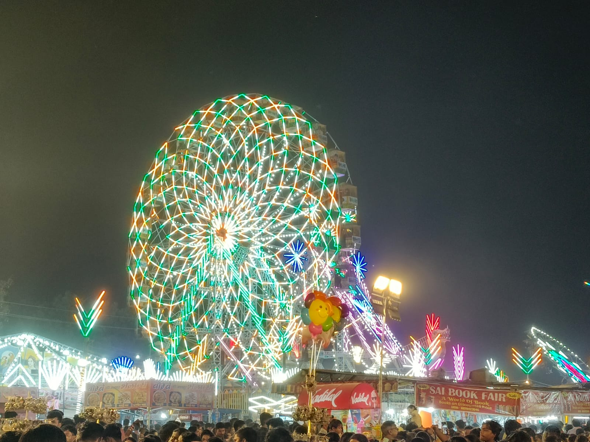

About the Fair
Dussehra is one of my favorite festivals of the year. People celebrate it all over India with great joy because it marks the victory of good over evil. This year, on the evening of Dussehra, I visited the Utsav Pandal held at the Jankipuram festival ground in Lucknow. The entire ground was glowing with bright, colorful lights. There was soft festive music playing in the background, and thousands of happy families were walking around.
The atmosphere was full of excitement. As soon as I entered through the main gate I saw Durga Puja Pandal, the happy cheers of little children on the rides. The ground was huge, clean, and nicely planned into separate lanes for shopping, food, and stage shows. You can learn more about cultural fairs across our state on the official UP Tourism Website.

Food and Shopping Stalls
The market area was the most crowded part of the fair. Small shop owners came from many different cities to sell their handmade items. Walking through the stalls was a great experience because there was so much to look at.
Things I Saw in the Fair
Here are some of the main things you can find inside the festival ground:
- Handmade Clothes: Famous chikan kurtas and bright silk sarees.
- Clay Items: Beautiful flower pots, painted diyas, and hanging bells for home decoration.
- Wooden Toys: Small train sets and funny spinning tops for kids, etc.
- Delicious Food: Delicious but Expensive.
Popular Sections of the Mela
This simple table shows the different areas of the ground and what you can do there:
| Section Name | Main Items |
|---|---|
| Cloth Market | Kurtas, bedsheets, and bags |
| Food Street | Chaat, samosas, and sweets |
| Rides Corner | Giant wheel and many more rides |
| Cheap Stalls | Very cheap stufs |
Rides
The best part of my visit to Utsav Pandal, Jankipuram Lucknow on Dasara was the rides. I was not able to ride all the rides due to money constraints but i rode two of the rides out many rides which includes rides like Gaint Wheel , Dragon Swing , Roller Coaster , Dancing Disc and many more i dont even remember the names of all the rides. The prices of ticket was pretty affordable i.e 120 rupes per person for one ride.

Best Part of the Pandal
The four main things i liked:
- Big rides like Giant Wheel, Dragon Swing , Dancing Disc , etc.
- Cheap Stall:Very cute and cheap stufs and things available.
- Durga Pandal:The decorated Durga Pandal was the most mesmerizing thing og whole mela.
- I enjoyed the company of my two best friends after a long time.
Conclusion
My visit to the Utsav Pandal in Jankipuram on Dussehra was a wonderful experience that I will always remember. It was not just about buying snacks or rides,i mean ride was best part but it was about spending quality time with family, and learning about our rich culture. Watching the tall effigy turn to ashes reminded everyone that goodness, truth, and honesty always win over evil. I left the ground with a happy heart, full stomach, and sweet memories of a lovely festive night.Click here for mmore info about